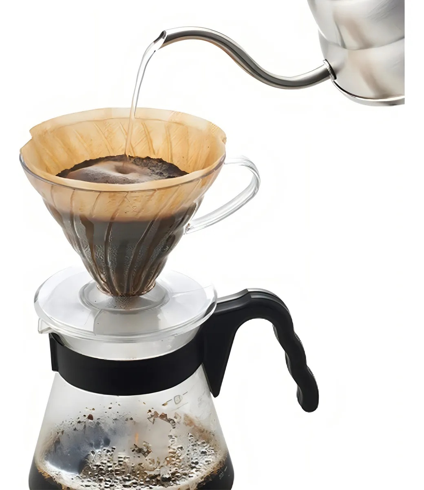
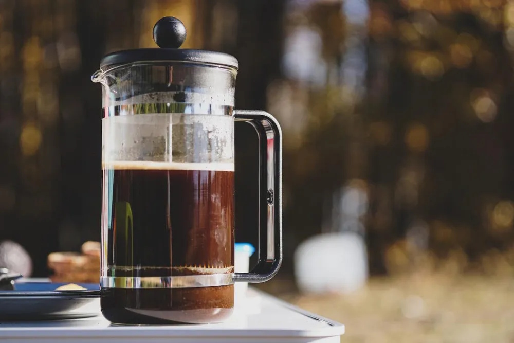

A Arte de Preparar Café
Métodos de Preparo

Coador de Papel (V60/Hario)
Um dos métodos mais populares e acessíveis. Destaca as notas de sabor do café.
- Aqueça a água a 92-96°C
- Use 15g de café para 250ml de água
- Despeje a água em movimentos circulares
- Tempo total: 2:30-3:00 minutos

Prensa Francesa
Método de imersão que produz um café encorpado e aromático.
- Use moagem grossa
- Proporção: 1:15 (café:água)
- Deixe em infusão por 4 minutos
- Pressione o êmbolo lentamente

AeroPress
Método versátil que permite experimentar diferentes receitas e perfis de sabor.
- Moagem média-fina
- Temperatura: 80-85°C
- Tempo de infusão: 1-2 minutos
- Pressione suavemente por 20-30 segundos
💡 Dicas Profissionais
Temperatura Ideal
A água deve estar entre 90-96°C. Água muito quente pode queimar o café e extrair sabores amargos.
Proporção Correta
Use uma balança! A proporção padrão é 1:16 (1g de café para 16ml de água).
Moagem na Hora
Moa os grãos apenas antes do preparo para preservar os aromas e óleos essenciais.
Água de Qualidade
Use água filtrada. A qualidade da água afeta diretamente o sabor do café.
🧮 Calculadora de Café
Calcule a quantidade ideal de café para sua xícara: